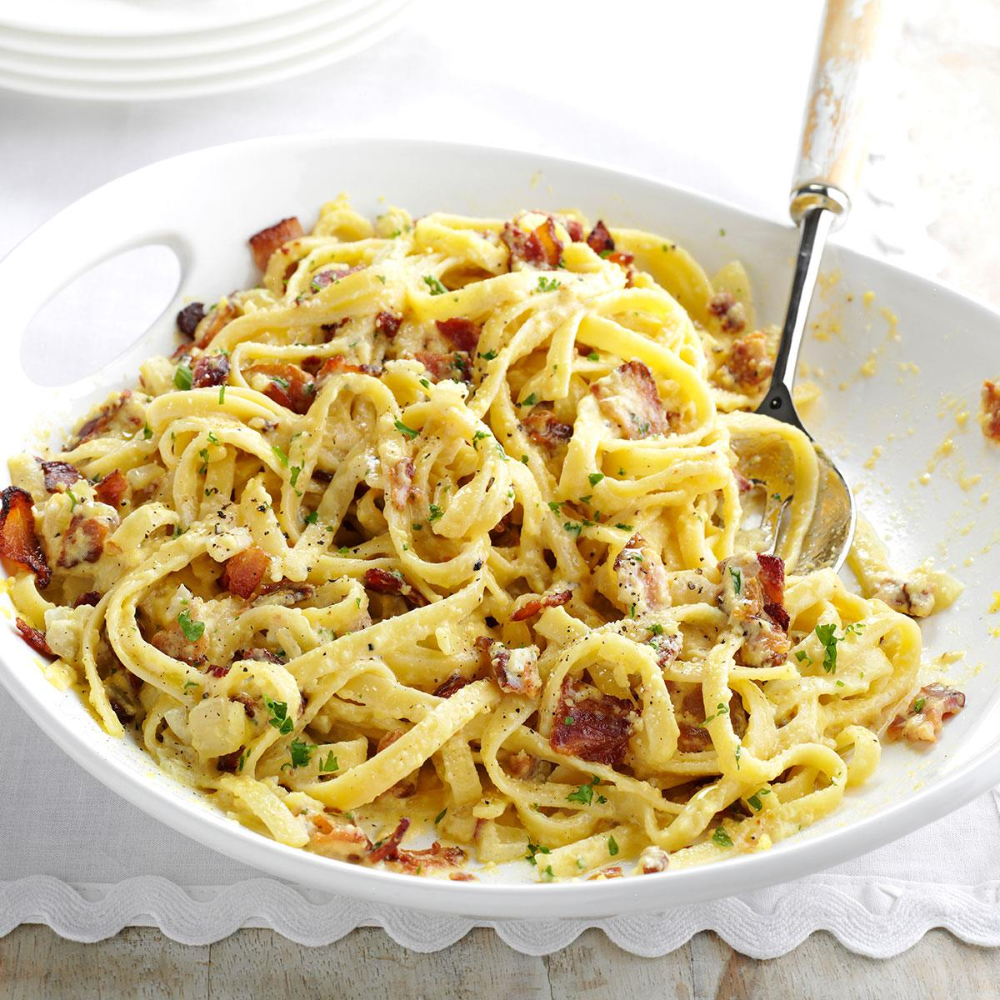

Go Back
Carbonara

A cheap, but classy date night meal that cooks in 15 minutes
Ingredients
- 1 Bacon, Pancetta, or Guanciale
- 1 Clove of Garlic
- Bucatini Pasta from Eataly (the best)
- 3 Large eggs and 1 yolk
- 4 Ounces of Parmesan
- Butter
Creation
- Dice the meat of choice into small cubes and cook on low to render the fat out
- In a large bowl or measuring cup, combine 3 large eggs and 1 egg yolk.
- Combine grated cheese and eggs and beat together with a fork until homogenous.
- Season with black pepper generously
- Cook your noodles in a large salted pot of water
- Combine cooked pasta with cooked bacon. Stir in egg mixture and cup of pasta water and mix until creamy
- Add parmesan and black pepper to taste